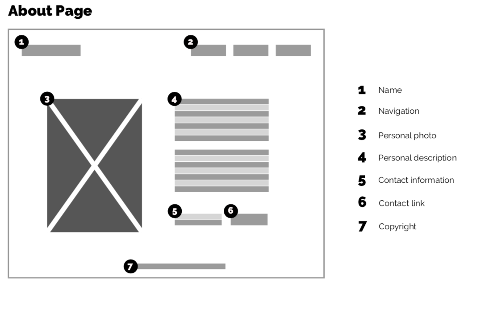
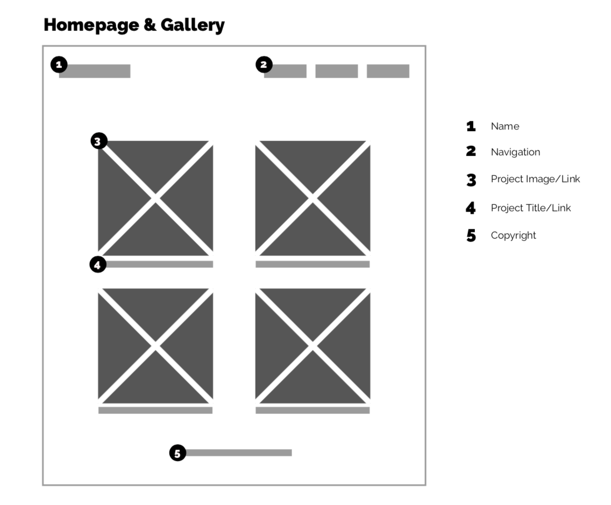

Sources
Image Scale on Hover by Larry Geams Parangan
Pure CSS Hamburger fold-out menu by Erik Terwan
Design Decisions
To fix the menu, I decided to make a menu that was horizontal on desktop and drop down on mobile. To make a drop down menu I used javascript. I also added more interactivity and hover effects on the main page for the viewer to connect with while navigating.
Goals/Audience
The users of the site would be professionals looking to hire students, and therefore my goal would be to impress someone already in the field of design.
Wireframes
 What Changed
The menu was fixed, more detail was put into the portfolio pages themselves, more interactivity was added on the main page, fixes in CSS were fixed such as max-width, overall personalization of the site was enhanced.
Extra
For this project I attempted to have a funky javascript mousetrail, however when the trail is on it does not allow the user to click on links, and so the functionality is currently turned off and commented out.